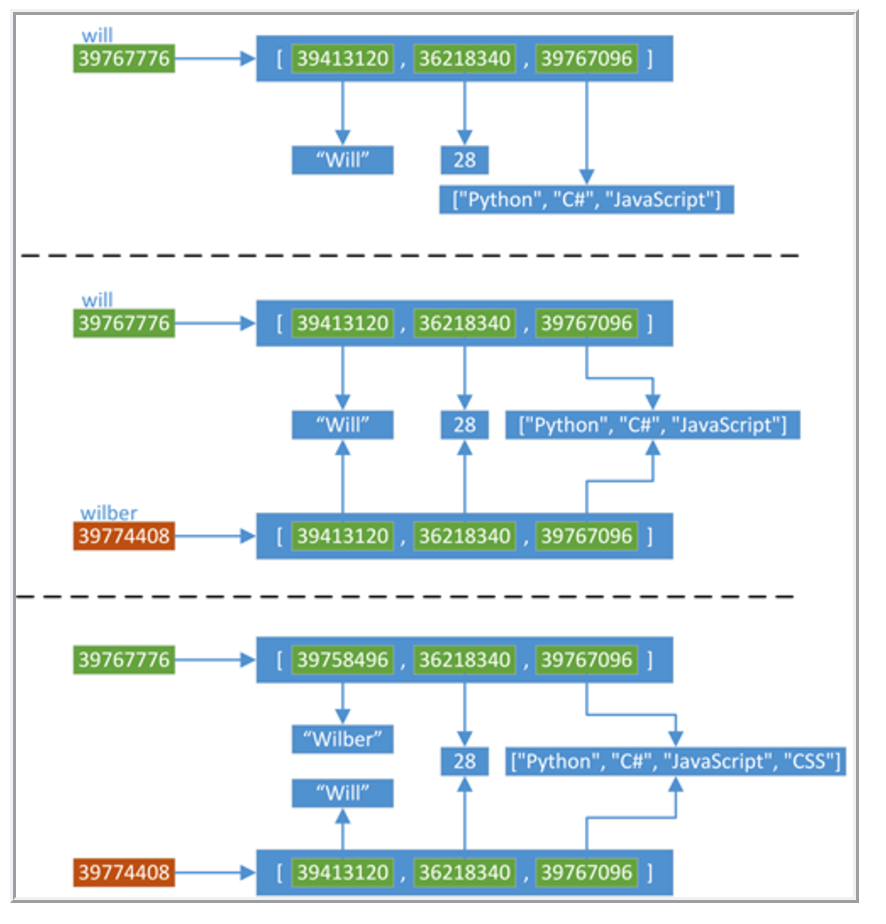
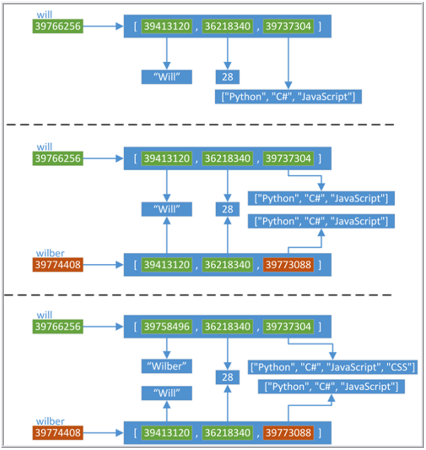

2017-07-09-python浅拷贝和深拷贝
1 浅拷贝
import copy will = ["Will", 28, ["Python", "C#", "JavaScript"]] wilber = copy.copy(will) print '<<<<<<<<<<<<<<<<' print id(will) print will print [id(ele) for ele in will] print '================' print id(wilber) print wilber print [id(ele) for ele in wilber] print '>>>>>>>>>>>>>>>>' will[0] = "Wilber" will[2].append("CSS") print '<<<<<<<<<<<<<<<<' print id(will) print will print [id(ele) for ele in will] print '================' print id(wilber) print wilber print [id(ele) for ele in wilber] print '>>>>>>>>>>>>>>>>'

总结一下，当我们使用下面的操作的时候，会产生浅拷贝的效果：
使用切片[:]操作
a = [1, 2, 3, 4] b = a[1:] print '<<<<<<<<<<<<<<<<' print a print id(a) print [id(elm) for elm in a] print '================' print b print id(b) print [id(elm) for elm in b] print '>>>>>>>>>>>>>>>>' b[0] = 'xiepeng' print '<<<<<<<<<<<<<<<<' print a print id(a) print [id(elm) for elm in a] print '================' print b print id(b) print [id(elm) for elm in b] print '>>>>>>>>>>>>>>>>'
- 使用工厂函数（如list/dir/set）
- 使用copy模块中的copy()函数
2 深拷贝
import copy will = ["Will", 28, ["Python", "C#", "JavaScript"]] wilber = copy.deepcopy(will) print '<<<<<<<<<<<<<<<<' print id(will) print will print [id(ele) for ele in will] print '================' print id(wilber) print wilber print [id(ele) for ele in wilber] print '>>>>>>>>>>>>>>>>' will[0] = "Wilber" will[2].append("CSS") print '<<<<<<<<<<<<<<<<' print id(will) print will print [id(ele) for ele in will] print '================' print id(wilber) print wilber print [id(ele) for ele in wilber] print '>>>>>>>>>>>>>>>>'

其实，对于拷贝有一些特殊情况：
- 对于非容器类型（如数字、字符串、和其他不可变的'原子'类型的对象）没 有拷贝这一说，就是说，对于这些类型，"obj is copy.copy(obj)" 、"obj is copy.deepcopy(obj)"
- 如果元祖变量只包含原子类型对象，则不能深拷贝
import copy print(2 is copy.copy(2)) print(2 is copy.deepcopy(2)) print("=" * 70) book = ('python', 'C#', 'JavaScript') print(book) copies = copy.deepcopy(book) print book is copies print("=" * 70) book = ('python', 'C#', 'JavaScript', []) print(book) copies = copy.deepcopy(book) print book is copies
3 总结
我理解浅拷贝和深拷贝，可以先理解一下 可变对象和不可变对象 ：
- 对于不可变对象，两种拷贝效果是一样的，都是指向的同一块内存。
- 对于可变对象是有区别的：
- 浅拷贝：直接指向同一份内存，一处修改，处处体现。
- 深拷贝：将内存中的内容全copy一份出来，每份单独存在，相互不影响。